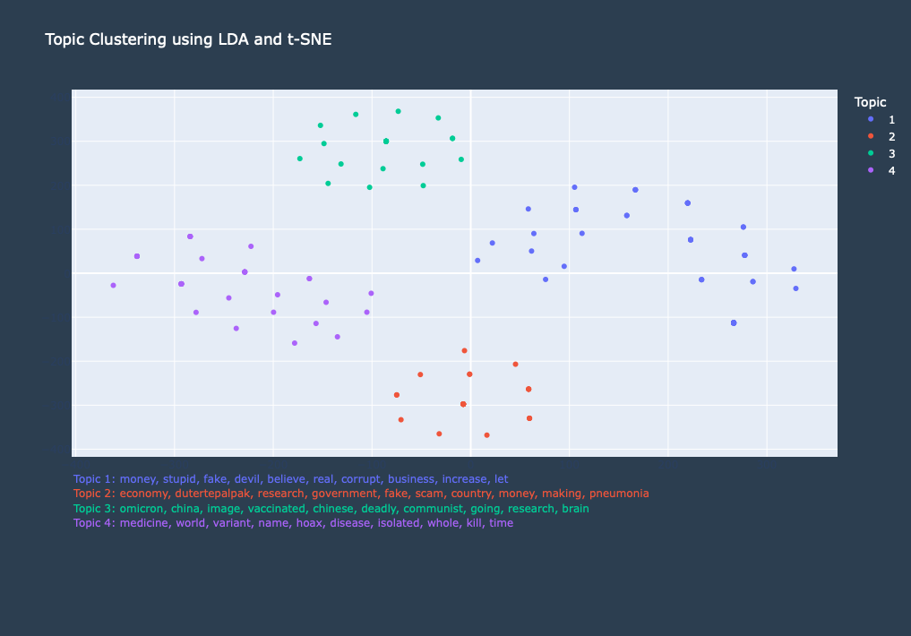

Latent Dirichlet Allocation
Topic clustering through Latent Dirichlet Allocation (LDA) was used to categorize tweets in the dataset. Associated keywords were collected to form a list of categories to automatically label each tweet through NLP.
LDA is a generative probabilistic model under unsupervised machine learning. It assumes that each tweet is composed by each topic and computes the probability of a word belonging to them. As the tweets were tokenized into keywords through preprocessing (see Data Exploration), the authors should initialize the specific parameters of the model. These variables include the number of topics to be generated and the number of keywords to represent each topic. With that, LDA can now analyze their distribution of words through the following steps:
For each word in each tweet,
- randomly assign them to a topic
- compute its probability to belong in each topic based on the current document
- compute its probability to belong in each topic based on the whole sample
- update the probability of each word belonging to each topic
- resample the topic assignment for each word based on its probability
- repeat the from step 2 until the model converges or reaches a specified number of iterations
In order to come up with coherent key words for each topic, stop words that were not in the package in the preprocessing were excluded or included. While removing stop words is used to reduce noise and improve efficiency, there are situations where their inclusion can provide advantages in terms of information retrieval.
Starting with a small number of topics, LDA was executed multiple times. Manual inspection was done until meaningful and distinct topics were obtained.
Through LDA, 4 topics were generated namely,
- Financial Scheme - entails perpetuating the pandemic to profit from it financially
Keywords: money, stupid, fake, devil, believe, real, corrupt, business, increase, let
- Government Fabrication - suggests that the virus itself does not exist and is just a deliberate fabrication orchestrated by the government
Keywords: economy, dutertepalpak, research, government, fake, scam, country, money, making, pneumonia
- Conspiracy Theory - suggests hidden agendas and secret plots, such as the pandemic is tool for control or manipulation, by influential people or groups
Keywords: omicron, china, image, vaccinated, chinese, deadly, communist, going, research, brain
- Others - any claims about the COVID-19 virus that doesn't belong to the categories mentioned above (e.g. misclassified illness, lack of personal experience)
Keywords: medicine, world, variant, name, hoax, disease, isolated, whole, kill, time

Evaluation
The data modeling technique used yielded reasonably accurate results in labeling the tweets with their respective clusters. As shown through the generated topics, most of the top keywords were related to them and to one another. Hence, upon checking, there are a number of tweets which were properly labeled by assessing their keywords and sentiment. The following are examples of tweets for each topic
Financial Scheme: “sayang lang ang pera sa testing oh my gulay phil heath wala na ang covid gawa gawa lang ng big pharma at gahaman sa pera para sa plandemic”
Government Fabrication: “wala naman talagang covid brad. ginagago lang tayo ng gvrnmnt”
Conspiracy Theory: "covid19 is a false flag operation! a hoax and a plandemic not to billgatesvaccine!!!!"
Others: “mga sir...kaming mga bisaya at mindanao hindi kc kami naniwala sa covid simpling trangkaso lang kc yan at wag tayong sunudsuran sa doh 😡😡😡"
While LDA did show accurate results to some extent, there are some tweets which were inappropriately labeled. These occurrences are possibly due to unremoved stopwords, typographical errors, and the model’s own limitations. Some of the tweets which were miscategorized are as follows:
Mislabeled as Others (should be Government Fabrication): “naglolokohan nalang tayo dito ssob eh hahaha di naman totoo yang covid. gawa gawa lang ng gov yan para takutin tayo.”
Mislabeled as Financial Scheme (should be Conspiracy Theory): “hindi naman kasi talaga totoo ang covid illuminati lang kayo 😂”
Overall, LDA was shown to be a reliable data modeling tool for topic clustering in our dataset. However, may also be prone to misclassification, which can be further minimized through more advanced preprocessing. It is recommended to add additional steps in preprocessing and explore other parameters to improve the model’s accuracy.
References:
Kulshrestha, R. (2021, December 10). A Beginner's Guide to Latent Dirichlet Allocation(LDA). Medium. https://towardsdatascience.com/latent-dirichlet-allocation-lda-9d1cd064ffa2
Chi Square Test
As we are dealing with the frequency of categorical data, the group implemented the Chi Square test in checking the distribution of
each category. From the null hypothesis, we expect that tweets that do not beleive in the COVID-19 virus use various false claims in equal proportion.
Therefore, the expected value for each is 150/6 = 25.
Chi Squared Values
The observed and expected frequencies were encoded in the given table below. Using the observed frequencies of each category, we computed the mean and
standard deviation using Google Sheet's built-in tools. From there, we manually calculated the Chi Squared values of each category to obtain the sum.
Test for Significance and Conclusion
To test for significance in the data distribution, we performed a goodness-of-fit test in the critical region at a 0.05 significance level and 3 degrees of freedom.
With the help of Google Sheet's built-in Right Tail Chi Square Distribution function, we found that the p-value for our dataset is 4.74E-4, which is considerably
less than the significance level. Hence, we reject the null hypothesis and accept the alternative hypothesis that states that the categorical data are not in equal proportion.
Hence, this test points to the conclusion that there are certain false claims that are more frequently associated with Filipinos' skepticism towards the COVID-19 virus.